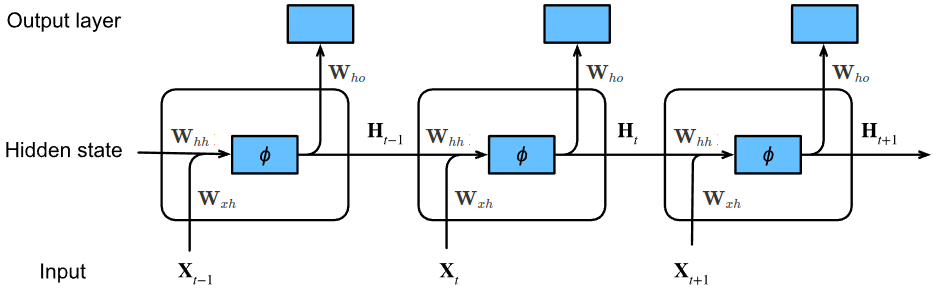

Đây là bài viết đầu tiên của mình trong lĩnh vực Natural Language Processing (Xử lý ngôn ngữ tự nhiên). Nó sẽ khá dài vì mình đã trình bày kỹ quá trình back-propagation. Mong các bạn đọc hết nhé! 😀
Sơ lược về Natural Language Processing
Bên cạnh Computer Vision (CV - Thị giác máy tính) thì Natural Language Processing (NLP - Xử lý ngôn ngữ tự nhiên) cũng là một mảng rất quan trọng và được nghiên cứu rộng rãi trong Deep Learning. Các sản phẩm nổi tiếng trên thế giới liên quan đến chữ viết, giọng nói, âm thanh như Google Dịch, Google Assistant, Siri, Alexa, ChatGPT… đều là các thành quả của việc áp dụng NLP vào thực tế.
Nguồn: Data Science Dojo
{kind=link}
Tuy NLP và CV là hai lĩnh vực nghiên cứu khác nhau nhưng chúng có những mối quan hệ rất đặc biệt và thú vị. Ta có thể đem ý tưởng của CV qua NLP, ví dụ như sử dụng phép toán convolution trong xử lý tính toán với văn bản, và ngược lại là đem ý tưởng của NLP qua CV, mà đặc biệt nổi tiếng gần đây là sử dụng Attention, Transformer trong CV. Việc kết hợp NLP và CV đã tạo ra nhiều kết quả rất nổi bật trong các ứng dụng như Image Captioning, Text-to-Image.
- Nếu mà kể tên ra thì ta có thể nhắc đến ngay mô hình rất ảo diệu là Stable Diffusion 😀
Nền móng của NLP bắt nguồn từ những mô hình toán học và xác suất, đặc biệt là mô hình Markov. Khi Deep Learning bắt đầu phát triển mạnh mẽ, ta đã có thêm những mô hình khác với độ hiệu quả rất tuyệt vời như Recurrent Neural Network, Sequence to Sequence, Attention Mechanism và Transformer. Trong đó, Recurrent Neural Network, hay là RNN, là sự khởi đầu thú vị của Deep Learning trong NLP. Mô hình RNN cũng là sẽ chủ đề của bài viết này.
Sequence data, sequence models
Sequence data
Ta có thể hiểu sequence data (dữ liệu dạng chuỗi) là dạng dữ liệu mà các giá trị trong đó được sắp xếp theo một trình tự không gian/thời gian nào đó và chúng có những mối liên hệ với nhau. Ví dụ:
- Văn bản: Đây là dạng sequence data rất phổ biến. Các từ trong câu tất nhiên là được sắp xếp theo một trình tự nhất định để tạo ra được một câu có nghĩa
- Âm thanh: Một đoạn ghi âm giọng nói, một bản nhạc
- Video: Các frame (ảnh) của video theo các thời điểm liên tiếp nhau
- Sinh học: Trình tự của một đoạn gen, dãy protein,…
- Time series: Các dữ liệu thu thập theo thời gian như thị trường chứng khoán
Văn bản
Âm thanh

Video
Time series
Lưu ý:
-
Tùy theo dạng dữ liệu mà ta sẽ có cách “số hóa" chúng sao cho các mô hình có thể tiến hành “học” được. Vì sao cần phải làm vậy? Vì máy tính chỉ hiểu được những con số, mà cụ thể hơn là chỉ hiểu 0 và 1 😀
-
Trong bài viết này, mình sẽ tạm thời chưa đề cập đến điều này. Đối với dữ liệu dạng văn bản, các bạn có thể xem bài viết tiếp theo về Word Embeddings nhé.
Sequence models
Khác với các dữ liệu dạng hình ảnh mà ta thường thấy trong Computer Vision, Natural Language Processing sẽ tập trung vào việc xử lý các dữ liệu dạng chuỗi. Do đó, các mô hình trong NLP thường được gọi là sequence model.
Để có sự phân biệt rõ hơn giữa sequence model và các model trong CV, ta thường xét đến input và các thức tính toán của chúng.
- Với model trong CV, input của ta sẽ là một ảnh xám hoặc là RGB (ma trận nhiều chiều). Trong quá trình tính toán, ta có thể thực hiện tính toán song song trên các giá trị đầu vào.
- Trong khi đó, sequence model sẽ nhận vào input là dữ liệu ở các giai đoạn khác nhau, mỗi giai đoạn thì ta sẽ có một vector hay một ma trận nhiều chiều. Khi tính toán, ta sẽ tính toán tuần tự từng giai đoạn một.
- Ví dụ, với input là một câu văn bản thì từng giai đoạn sẽ ứng với từng từ, mỗi từ có thể được biểu diễn bởi một số hoặc một vector.
Minh họa sequence model
Nguồn: Jeddy92
{kind=link}
Sequence models được sử dụng cho nhiều bài toán phổ biến trong thực tế như sau:
Nguồn: deeplearning.ai
Recurrent Neural Network (RNN)
Để cho dễ diễn đạt, ta xét một bài toán trong NLP với input là một câu có độ dài $T_x$, từ ứng với vị trí thứ $i$ được biểu diễn bằng vector $x^{< i >}$, output là một câu có độ dài $T_y$ và những từ tương tứng là $y^{< i >}$.
- Thông thường thì ta sẽ giả sử luôn $T_x = T_y$ để bài toán đơn giản hơn một chút. Để thực hiện được thì chỉ đơn giản là padding/truncate để chúng bằng nhau thôi 😜
- Nếu bạn đang thắc mắc là có bài toán nào dạng như này thì hãy nghĩ đến Machine Translation.
Hạn chế của mô hình Multi-layers Percentron
Một cách tự nhiên, ta hoàn toàn có thể xây dựng một mô hình MLP (Multi-layers Perceptron) với input layer có $T_x$ neurons, output layer có $T_y$ neurons như sau:
Minh họa sử dụng MLP cho bài toán
Nguồn: deeplearning.ai
Với MLP thì ta đã thực hiện tính toán song song, tức là tính luôn trên toàn bộ input và cho ra output. Tuy nhiên, cách tiếp này có những hạn chế khá nghiêm trọng:
- Không phải câu input nào cũng có độ dài $T_x$ như nhau, output cũng vậy.
- Nếu các câu này có nhiều từ thì mô hình sẽ có rất nhiều trọng số.
- Mô hình không học được sự “chia sẻ đặc trưng” giữa các vị trí khác nhau trong câu. Ví dụ, cụm từ “tôi đi học” xuất hiện trong câu input thì cho dù nó bắt đầu ở vị trí nào đi nữa, ta vẫn nên học được các đặc trưng rất tương tự nhau. Đây cũng là một trong những vấn đề dẫn đến CNN được áp dụng nhiều hơn vào dữ liệu ảnh chứ không phải là MLP.
Ý tưởng của RNN
Vì sequence data có một đặc điểm là thứ tự của các giá trị trong input là rất quan trọng nên ta thường thiên về hướng lần lượt xử lý trên từng vị trí một. Đồng thời, khi đi đến các vị trí sau thì ta cũng nên có những thông tin đã trích xuất được từ các vị trí trước. Ý tưởng của RNN chính là như vậy.
Sơ lược về cách hoạt động của RNN được mô tả như sau:
- Với điều kiện giả sử $T_x=T_y$, ta sẽ thực hiện tính toán $T_x$ lần, tại thời điểm (hay là vị trí) thứ $i$ thì từ $x^{< i >}$ (input) ta tính ra $y^{< i >}$ (output).
- Hơn nữa, để thực hiện thao tác lưu giữ các thông tin cho đến thời điểm hiện tại và đưa nó qua các thời điểm sau, ta cũng cần tính thêm một giá trị là $h^{< i >}$ (giả sử luôn $h^{<0>} = 0$). Lúc này, ta gọi $h^{< i >}$ là trạng thái ẩn (hidden state)
- Như vậy, tại mỗi thời điểm thì ta cần tính ra $h^{< i >}$ và $y^{< i >}$, dựa vào 2 input là $x^{< i >}$ và thông tin từ những thời điểm trước được tổng hợp tại $h^{<i - 1>}$.
Minh họa ban đầu cho RNN
Nguồn: deeplearning.ai
Nhìn vào hình trên, ta có thể suy ra rằng những trọng số mà RNN cần học là ma trận trọng số của hidden layer ở các thời điểm.
Để thuận tiện cho các phần sau, ta sẽ quy ước kí hiệu như sau:
- Vector input, output và hidden state tại thời điểm $t$ lần lượt là $\bold{X}_t \in \mathbb{R}^d$, $\bold{O}_t \in \mathbb{R}^o$ và $\bold{H}_t \in \mathbb{R}^h$.
- Ma trận trọng số cho phép tính liên quan giữa $\bold{X}_t$ và $\bold{H}_t$ là $\bold{W}^{t}_{ xh } \in \mathbb{R}^{ h \times d }$.
- Tương tự như trên, ta có $\bold{W}^{t}_{hh} \in \mathbb{R}^{h \times h}$ và $\bold{W}^{t}_{ho} \in \mathbb{R}^{o \times h}$.
Khi đó, ta có thể biểu diễn RNN như sau:
Nguồn: Dive into DL
{kind=link}
Sự chia sẻ trọng số giữa các thời điểm
Qua mô tả về cách hoạt động của RNN ở phần trước, ta thấy rằng nếu ở mỗi thời điểm mà ta cần dùng một bộ trọng số khác nhau thì lượng tham số của mô hình RNN sẽ lớn không kém gì MLP ở phần 3.1 😀
Trong RNN, giữa các thời điểm sẽ có sự chia sẻ trọng số, tức là mọi thời điểm đều dùng cùng một bộ trọng số $(\bold{W}_{xh}, \bold{W}_{hh}, \bold{W}_{ho})$ để tính toán $\bold{O}_t$ và $\bold{H}_t$. Lợi ích của việc chia sẻ trọng số bao gồm:
- Số lượng trọng số trong RNN sẽ giảm đi rất nhiều lần so với MLP
- Ta cũng có thể khắc phục được nhược điểm của MLP trong việc “chia sẻ đặc trưng” giữa các vị trí khác nhau trong câu.
Khi đó, từ hình ở phần 3.2, sau khi chú thích vị trí các ma trận trọng số được sử dụng thì ta có hình sau:

Thay vì phải biểu diễn đủ các thời điểm, ta có thể viết gọn lại RNN như hình bên dưới:
Biểu diễn gọn hơn của Recurrent Neural Network
Quá trình feed-forward
Đầu tiên, ta sẽ xem hidden state ban đầu là $\bold{H}_0 = \bold{0}$. Để đơn giản, ta sẽ bỏ qua các giá trị bias ứng với $\bold{H}_t$ và $\bold{O}_t$. Khi đó, quá trình feed-forward tại thời điểm $t > 0$ diễn ra như sau:
$$\begin{equation} \bold{H}_t = \phi_h (\bold{W}_{xh} \bold{X}_t + \bold{W}_{hh} \bold{H}_{t-1}) \end{equation}$$ $$\begin{equation} \bold{O}_t = \phi_o (\bold{W}_{ho} \bold{H}_t) \end{equation}$$
, với $\phi_h$ và $\phi_o$ là các activation function. Thông thường, $\phi_h$ là $ReLU$ hoặc $\tanh$ và $\phi_o$ thường là $\text{softmax}$.
Như vậy, từ $\bold{X}_{t}$ và $\bold{H}_{t-1}$ ta sẽ tính được $\bold{H}_{t}$, và từ $\bold{H}_{t}$ thì ta sẽ tính được $\bold{O}_{t}$.
Nhận xét.
-
Ta có thể nhận thấy rất rõ sự khác biệt giữa feed-forward trong RNN so với MLP. Với MLP thì nó chỉ cần hai phép toán (xem như phần hidden layers chỉ có 1 layer) là có luôn kết quả cuối cùng:
$$\begin{equation*} \bold{H} = \phi_h (\bold{X} \bold{W}_{xh}^\top ) \end{equation*}$$ $$\begin{equation*} \bold{O} = \phi_o (\bold{H} \bold{W}^\top _{ho} ) \end{equation*}$$
, với $\bold{X} \in \mathbb{R}^{n \times d}$ và $\bold{H} \in \mathbb{R}^{n \times h}$ là các ma trận ứng với toàn bộ giá trị input và hidden state (trong RNN thì $\bold{X}_t$ và $\bold{H}_t$ là các vector).
Back-propagation Through Time (BPTT)
Khi mà feed-forward trong RNN diễn ra khác với MLP thì tất nhiên là back-propagation cũng khác 😀 Thuật toán back-propagation trong sequence model được gọi là Back-propagation Through Time (BPTT).
Đầu tiên, ta sẽ đề cập đến cost function. Giả sử output của RNN tại thời điểm $t$ là $\bold{O}_t$ và label là $\bold{Y}_t$. Kí hiệu $l(\bold{O}_t, \bold{Y}_t)$ là loss tại thời điểm $t$. Khi đó cost function của ta là
$$\begin{equation} L= \sum_{i=1}^{T} l(\bold{O}_t, \bold{Y}_t) \end{equation}$$
- Thực ra là ta có chia $L$ cho $T$ nữa nhưng để cho gọn thì thôi bỏ qua 😜
Những gì ta cần thực hiện trong quá trình BPTT là tính đạo hàm của $L$ theo các ma trận trọng số $\bold{W}_{xh}$, $\bold{W}_{hh}$ và $\bold{W}_{ho}$. Điều đặc biệt ở đây là trong quá trình feed-forward thì $\bold{H}_{t-1}$ sẽ lại được dùng để tính $\bold{H}_t$ chứ nó không đi một “mạch" từ $\bold{X}$ đến $\bold{H}$ rồi từ $\bold{H}$ đến $\bold{O}$ như trong feed-forward của MLP thông thường.
Để công thức được gọn nhẹ hơn, ta sẽ giả sử luôn các activation function $\phi_h$ và $\phi_o$ là hàm đồng nhất, tức là
$$\phi_h(\bold{x}) = \phi_o(\bold{x}) = \bold{x}$$
Quá trình BPPT diễn ra như sau:
-
Đầu tiên, dễ nhất là tính đạo hàm $L$ theo $\bold{W}_{ho}$ 😀 Từ biểu thức $(3)$ thì ta có ngay
$$\begin{equation} \frac{\partial L}{\partial \bold{O}_{t}} = \frac{\partial l(\bold{O}_t, \bold{Y}_t)}{\partial \bold{O}_{t}} \end{equation}$$
Do đó, kết hợp $(2)$ và $(4)$ thì
$$ \frac{\partial L}{\partial \bold{W}_{ho}} = \sum_{t=1}^{T} \left ( \frac{\partial L}{\partial \bold{O}_{t}} \frac{\partial \bold{O}_t}{\partial \bold{W}_{ho}} \right ) = \sum_{t=1}^{T} \left ( \frac{\partial L}{\partial \bold{O}_{t}}\bold{H}_t^\top \right ) $$
Lưu ý. Cách tính giá trị của $\dfrac{\partial l(\bold{O}_t, \bold{Y}_t)}{\partial \bold{O}_{t}}$ trong biểu thức $(4)$ sẽ phụ thuộc vào hàm $l$ và thường thì nó rất dễ tính 😜
-
Tiếp theo, ta có nhận xét sau:
- $\bold{H}_T$ chỉ tham gia vào một biểu thức trong quá trình feed-forward (để tính ra $\bold{O}_T$)
- $\bold{H}_{t}$ với $t < T$ thì tham gia vào hai biểu thức (tính $\bold{H}_{t +1}$ và $\bold{O}_t$)
Do đó, cách tính $\dfrac{\partial L}{\partial \bold{H}_{t}}$ sẽ có sự khác biệt tùy theo giá trị $t$.
-
Với $t = T$: Từ $(2)$ và $(4)$ ta có
$$ \frac{\partial L}{\partial \bold{H}_{T}} = \frac{\partial L}{\partial \bold{O}_{T}} \frac{\partial \bold{O}_T}{\partial \bold{H}_{T}} = \bold{W}_{ho}^\top \frac{\partial L}{\partial \bold{O}_{T}} $$
-
Với $t < T$: Từ $(1), (2)$ và $(4)$ thì
$$ \frac{\partial L}{\partial \bold{H}_{t}} = \frac{\partial L}{\partial \bold{O}_{t}} \frac{\partial \bold{O}_t}{\partial \bold{H}_{t}} + \frac{\partial L}{\partial \bold{H}_{t+1}} \frac{\partial \bold{H}_{t+1}}{\partial \bold{H}_{t}} = \bold{W}_{ho}^\top \frac{\partial L}{\partial \bold{O}_{t}} + \bold{W}_{hh}^\top \frac{\partial L}{\partial \bold{H}_{t+1}} $$
Cứ tiếp tục biến đổi tiếp với $\dfrac{\partial L}{\partial \bold{H}_{t+1}}$ và cứ như thế cho đến $T$, ta sẽ có
$$\begin{equation} \frac{\partial L}{\partial \mathbf{H}_t}= \sum_{i=t}^T {\left(\mathbf{W}_{hh}^\top\right)}^{T-i} \mathbf{W}_{ho}^\top \frac{\partial L}{\partial \mathbf{O}_{T+t-i}} \end{equation}$$
Để ý rằng biểu thức $(5)$ cũng đúng với $t = T$.
Vậy từ $(1)$ và $(5)$ thì
$$\begin{equation} \frac{\partial L}{\partial \bold{W}_{xh}} = \sum_{t=1}^{T} \left ( \frac{\partial L}{\partial \bold{H}_{t}} \frac{\partial \bold{H}_t}{\partial \bold{W}_{xh}} \right ) = = \sum_{t=1}^{T} \left ( \frac{\partial L}{\partial \bold{H}_{t}} \bold{X}_t^\top \right ) \end{equation}$$
$$\begin{equation} \frac{\partial L}{\partial \bold{W}_{hh}} = \sum_{t=1}^{T} \left ( \frac{\partial L}{\partial \bold{H}_{t}} \frac{\partial \bold{H}_t}{\partial \bold{W}_{hh}} \right ) = = \sum_{t=1}^{T} \left ( \frac{\partial L}{\partial \bold{H}_{t}} \bold{H}_{t-1}^\top \right ) \end{equation}$$
Vấn đề vanishing và exploding gradients trong RNN
Qua các biểu thức $(6)$ và $(7)$, ta thấy rằng nếu giá trị $T$ lớn (tức là câu input gồm rất nhiều từ) thì sẽ có hai trường hợp xảy ra đối với các giá trị gradient $\dfrac{\partial L}{\partial \bold{W}_{xh}}$ và $\dfrac{\partial L}{\partial \bold{W}_{ho}}$:
- Vanishing: Trong quá trình tính $\left ( \bold{W}_{hh}^\top \right ) ^ {T-i}$ có nhiều giá trị nhỏ hơn 1 được nhân với nhau.
- Exploding: Ngược lại (lớn hơn 1).
Ta có một giải pháp để hạn chế hiện tượng này là Truncated BPTT, tức là ta chỉ lan truyền gradients đến một trạng thái cách trạng thái hiện tại một khoảng nào đó thôi chứ không lan truyền toàn bộ.
Đối với hiện tượng vanishing trong RNN, ta có thể diễn đạt nó một cách văn vở hơn là mô hình đã bị “quên” những thông tin tích lũy từ phía trước.
-
Ví dụ, ta có hai câu sau:
- The cat, which always … (very long descriptions) …, was very cute
- The cats, which always … (very long descriptions) …, were very cute
Thông thường, động từ to-be ở trước “very cute” sẽ phụ thuộc vào danh từ ở đầu câu (”cat” hay “cats”). Tuy nhiên, nếu RNN bị vanishing gradient thì nó sẽ không thể nhớ được trước đó là một con mèo hay nhiều con mèo để mà chọn động từ to-be cho đúng. 😀
Yếu tố này đã mở ra một hướng phát triển cho RNN là ta sẽ cố gắng tính toán thêm những phép toán khác để duy trì được các thông tin từ trước, từ phía xa mà RNN hiện tại không thể ghi nhớ được. Từ đó, ta có sự ra đời của Gated Recurrent Unit (GRU) và Long Short-Term Memory (LSTM).
Quá trình huấn luyện và sử dụng mô hình RNN trong thực tế
Đối với các mô hình ML hay CNN thông thường, những thao tác diễn ra trong bước huấn luyện (training) và sử dụng trong thực tế (testing) là rất giống nhau: Từ một intput cho ra một output và chỉ như vậy là xong (ta tạm bỏ qua back-propagation).
Nguồn: Towards Data Science
Tuy nhiên, trong RNN thì training và testing sẽ có sự khác biệt khá rõ rệt. Đối với training, ở mỗi thời điểm thì ta sẽ luôn có input và label ứng với thời điểm đó. Tuy nhiên, trong testing thì ta chỉ có duy nhất input cho thời điểm đầu tiên và input của những thời điểm sau chính là output của thời điểm trước đó.
Ta xét ví dụ với bài toán xây dựng mô hình RNN sinh ra đoạn văn bản như sau:
Nguồn: ML Lectures
{kind=link}
-
Trong training, từ một câu có $T_x$ từ là $x_1, x_2,…, x_{T_x}$ thì ta sẽ tạo ra được một training sample với $(T_x + 1)$ thời điểm, ở thời điểm $t$ thì input và label lần lượt là $x_t$ và $x_{t+1}$ (giả sử $x_0$ và $x_{T_x + 1}$ lần lượt là các từ đặc biệt nhằm báo hiệu bắt đầu và kết thúc đoạn).
-
Trong testing, từ một từ ban đầu là $x_1$ (thường là từ bắt đầu đoạn văn bản), ta sẽ có testing sample với 1 thời điểm. Sau khi qua RNN, ta có thêm từ mới là $y_1$. Sau đó, $y_1$ được sử dụng như là input của thời điểm thứ hai, đưa qua RNN và có tiếp từ $y_2$. Quá trình cứ lặp lại cho đến khi đã sinh ra đủ số từ chúng ta cần hoặc là từ được sinh ra chính là từ kết thúc đoạn.
Các dạng mô hình RNN
Chúng ta để ý rằng dạng mô hình RNN mình đã trình bày ở phần trước đang nhận input là một câu và output của nó cũng là một câu. Dạng mô hình này còn gọi là many-to-many. Tùy vào bài toán cần giải quyết mà ta có các dạng như sau:
Các dạng của mô hình RNN
Nguồn: Javatpoint
{kind=link}
- One-to-one: Cái này thì rất thường thấy, ví dụ như Image Classification.
- One-to-many: Có thể lấy ví dụ như bài toán sinh ra văn bản hoặc âm nhạc. Ta cung cấp input là một từ bất kì và mô hình sẽ tạo ra từ kế tiếp, ta lại đem từ này vào làm input để có từ tiếp theo.
- Many-to-one: Bài toán Sentiment Analysis, Mail fitlering,…
- Many-to-many: Chủ yếu là bài toán Machine Translation.
Tài liệu tham khảo
- Robin M. Schmidtm, Recurrent Neural Networks (RNNs): A gentle Introduction and Overview
- Dive into DL, Recurrent Neural Network
- DeepLearning.AI, Deep Learning Specialization, 5. Sequence Models
Lưu ý. Nếu phần Comment không load ra được thì các bạn vào DNS setting của Wifi/LAN và đổi thành "8.8.8.8" nhé (server của Google)!